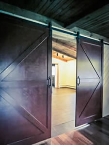

Find Your Inner Light
Path of Light Yoga Studio provides all levels of yoga practice in a tranquil, peaceful environment. Whether you are new to yoga or an experienced practioner, our dedicated instructors can develop a practice to meet your needs. Let your inner light shine at the Path of Light Yoga Studio.
- Hatha, Vinyasa, and Restorative Yoga classes
- Drop-ins welcome
- Mats, blocks, and blankets provided
- Relax in our Serenity Lounge before or after your class